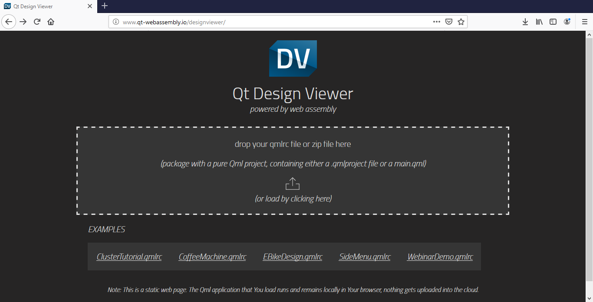

Previewing in Browsers

Qt Design Viewer is a QML viewer that runs in your web browser. This means that you can run applications in most widely-used web browsers, such as Apple Safari, Google Chrome, Microsoft Edge, and Mozilla Firefox, on the desktop and on mobile devices.
The startup and compilation time depend on your browser and configuration. However, the actual performance of the application once started is indistinguishable from the same application running on the desktop.
You can run Qt Quick UI projects, which have a .qmlproject file that define the main QML file and the import paths. Compress the project folder into a ZIP file that you upload to Qt Design Viewer. The loaded applications remain locally in your browser. No data is uploaded into the cloud.
To preview an application in a web browser:
- In the browser, open Qt Design Viewer.
- Drag and drop your application package to Qt Design Viewer, or click the load icon to browse for your file.
Your application is compiled and run on Qt Design Viewer.